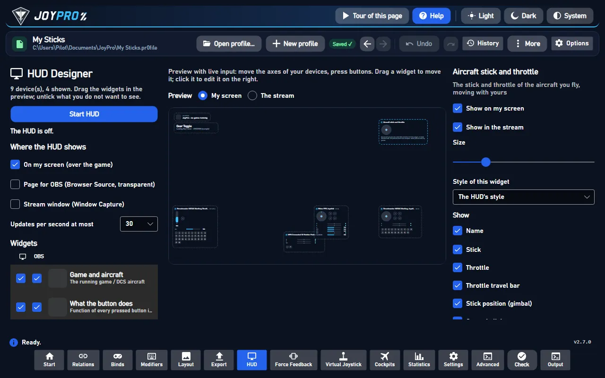
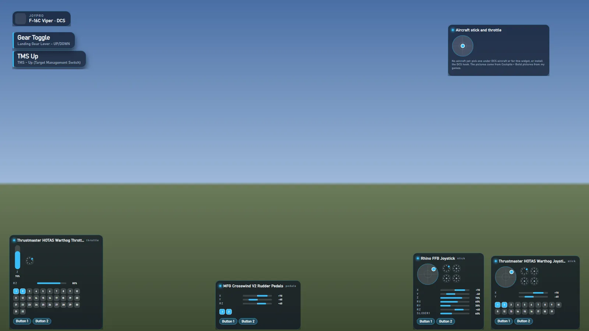

#Slå overlay til/fra
KnapskrevetStart HUD / Stop HUD: starter HUD'en med de udgange, der er markeret ovenfor: læser enhederne om nødvendigt, finder det kørende spil og indlæser dets tildelinger.
Trykkes den igen, lukker den alle udgange.
HUD'en viser dine enheder på skærmen, mens du spiller, ligesom en streamers controller-overlay: stick-billedet vipper med din stick, håndtag og akser bevæger sig som bjælker, knapper, der holdes nede, lyser op med deres navne, og en linje siger, hvad den trykkede knap gør i det kørende spil ("Gear Toggle"). Den kan vises over spillet, i OBS eller begge steder, hver med sine egne widgets. Denne side er dens designer.


flowchart LR D["Dine enheder"] --> P["HUD'en"] O["Dine tildelinger i<br/>spillet"] --> P P --> S["På min skærm"] P --> B["Side til OBS"] P --> W["Streamvindue"]
Stop HUD (samme knap) lukker den. Alt, hvad du indstiller her, bliver gemt og er der igen efter en genstart.
Træk en widget i forhåndsvisningen for at flytte den; klik på den for at ændre den til højre. Ordn automatisk placerer dem langs bunden: throttle og enheder til venstre hånd til venstre, pedaler i midten, stikken til højre hånd til højre.


HUD-vinduet er gennemsigtigt og bliver oven på spil i vindue og i kantløst vindue. Klik går igennem det til spillet. Det er ikke på proceslinjen eller i Alt+Tab. Eksklusiv fuld skærm skjuler det (en begrænsning i Windows): skift spillet til kantløst vindue. Linjen for den trykkede knap nævner handlingen i det spil og fly, for eksempel "Weapon Release" i F-16C og "Fire guns" i IL-2.
De tre udgange er uafhængige af hinanden:
| Udskrift | Til | Hvordan |
|---|---|---|
| På min skærm (over spillet) | dig | et gennemsigtigt vindue oven på spillet |
| Side til OBS (browserkilde, gennemsigtig) | din stream (anbefalet) | JoyPro leverer en side kun på denne pc; Kopiér lægger dens adresse i udklipsholderen |
| Streamvindue (vinduesoptagelse) | streams med Window Capture | et normalt vindue (kan ligge bag spillet) med en gennemsigtig baggrund eller chroma key-baggrund |
Fjern fluebenet ved På min skærm for at spille med en ren skærm, mens streamen stadig viser HUD'en, eller vis forskellige widgets på hver: hver widget har to flueben, en skærm (din skærm) og OBS (streamen). Forhåndsvisning: Min skærm / Streamen skifter, hvad designeren viser. Maks. opdateringer pr. sekund (15, 30 eller 60; 30 er jævnt og let).
http://127.0.0.1:8765/hud).Siden tegner de widgets, der er markeret til streamen, på samme steder og i samme stilarter som i appen, på en scene på 1920 x 1080, der skaleres til kilden. Er porten optaget af et andet program? Vælg en anden under Port, og kopiér adressen igen.


Window Capture i stedet: markér Streamvindue, og vælg baggrunden (gennemsigtig, grøn, magenta, blå eller din egen farve). I OBS tilføjer du Window Capture med Capture Method: Windows 10 (1903 and up); med en farve tilføjer du et Chroma Key-filter i den farve. Hvis en gennemsigtig baggrund vises sort i din OBS, så brug Browser Source eller en farve.
Sådan får OBS' Browser Source HUD'en: én side, derefter kun ændringerne.
| # | Hvem | Hvad der sker |
|---|---|---|
| 1 | OBS | Browser Source åbner http://127.0.0.1:8765/hud. |
| 2 | JoyPro | Sender siden: layout, stilarter og billeder. |
| 3 | OBS | Åbner /hud/events. Den forbliver åben. |
| 4 | JoyPro | Sender tilstanden (akser, knapper, hvad knappen gør), højst 30 gange i sekundet og kun når noget har ændret sig. |
| 5 | JoyPro | Sender layoutet igen, når widgets, placeringer eller stilarter ændres. |
Widgets viser alle enheder plus overskriften, tildelingsticker'en og fly-widgetten. Genindlæs enheder læser de tilsluttede enheder igen; Vis alle markerer alle widgets til din skærm; Ordn automatisk og Nulstil placeringer sætter dem på plads.
Pr. widget (klik på den i forhåndsvisningen eller listen):


Fly-widgetten: stick, throttle, bjælke for throttle-vandring, stickposition, kontroller lyser op, holdte kontroller med navn; Fly (Automatisk: det fly, du flyver, eller et hvilket som helst billede, der er sat på denne pc) og Bevæger sig med (den stick og throttle, der bevæger den). Dens billeder kommer fra spillets egne cockpitbilleder (Cockpits > Lav billeder fra mine spil eller en billedpakke), ellers JoyPros stregtegning af det rigtige greb.
Stil har 40 forudindstillinger: Glas, Neon, Minimal, enkle (Matglas lys, Streamer enkel, Streamer kraftig, Kompakt, Stor tekst, Pastel, Kun omrids), cockpitskærme (Militærgrøn HUD, Ravgul MFD, Passagerfly-PFD, Glascockpit, Nattesyn, Rød cockpitbelysning, Vektor-trådmodel, Retroterminal, Warbird, Hologram), spil og genrer (Rumsim orange, Holo cyan, Cyberpunk, Synthwave, Neonpink, Racing, Taktisk sand, Marineblå og guld, Stealth, Spøgelse), farvetemaer (Arktis, Ørken, Ocean, Solnedgang, Kongelig, Kulfiber) og læsbarhed (Høj kontrast, Høj kontrast lys, Monokrom, Monokrom lys). › går videre til den næste.


Nedenfor: accentfarver med ét klik, Accent, Trykket og Uigennemsigtighed, derefter designvalgene pr. element: Kort (baggrund, kant, hjørner, skygge), Tekst (skrifttype, størrelse, bogstavafstand, farver, Fede navne), Stick-visning (ring, firkant, trådkors, radar, prik; størrelse, glød), Bjælker og greb (former, højder, den tomme del) og Knapper og mærkater (former). Et ændret valg gør stilen til "eget design (ændret)": Gem stil gemmer den under dit navn, Fortryd ændringer går tilbage til forudindstillingen, Eksportér stil... / Importér stil... deler den som fil, Slet fjerner din egen stil.
Hvad knappen gør: hvor mange linjer, hvor længe de bliver (sekunder), skriftstørrelsen, Vis enhed og knap og Kun mens et spil kører. Klik igennem lader museklik gå igennem HUD-vinduet (gælder, når HUD'en starter).
JoyPro finder det kørende spil ud fra dets proces (DCS, IL-2, Star Citizen og alle andre spil, den håndterer) og viser kun det spils tildelinger. DCS skal også kende flyet: vælg det under DCS-fly, eller Installér DCS-hook, så DCS fortæller JoyPro flyet ved hver missionsstart (en lille Lua-fil plus én beskyttet linje i Export.lua, sikkerhedskopieret først; Fjern lægger filen tilbage byte for byte; luk DCS først). Kontrollér siger, om hook'en er installeret.


View model: MainWindowViewModel.Hud.cs (enheder, widgets, layout), MainWindowViewModel.HudStyles.cs (forudindstillinger, egne stilarter, import/eksport), MainWindowViewModel.HudStream.cs (udgange, stream-side, fly-widget), MainWindowViewModel.HudAxes.cs (pindens akser), MainWindowViewModel.Overlay.cs (start/stop, kørende spil, knaplinjer, DCS-hook). Views: Views/HudWindow.axaml, Views/Controls/HudSurface.axaml, HudElements.cs, HudPanel.cs. Forudindstillinger: Models/HudStylePresets.cs.
engine hud devices giver hver tilsluttet enheds model, slags, hånd, produktbillede, akser med deres rolle, knapper med deres navne og kontrol-id'er (Controls, til fly-widgetten) og layoutbilledet med knappernes positioner.engine overlay map (--game, --plane, --unit): de tildelte knapper med modifikatorer og titler. En tildeling med modifikatorer vises, mens dens modifikatorer holdes nede; tildelingen med flest matchende modifikatorer vinder.engine overlay dcs-hook status / install / remove (--path, --dry-run): Scripts\JoyProOverlay.lua plus én linje i Export.lua pakket ind i pcall; DCS sender enhedstypen til 127.0.0.1:1992 (UDP). Hook'en kalder eksportfunktionerne i andre scripts (SRS, Tacview), som den erstatter.Services/HudStreamServer.cs, HudStreamHub.cs, Resources/hud-stream.html; bundet kun til 127.0.0.1, forespørgsler med et andet værtsnavn afvises. GET /hud (side), /hud/events (Server-Sent Events: layout, state), /hud/img/<id> (billeder som PNG), /hud/state (JSON). Uden en tilsluttet side lytter den kun.Services/HudInputPump.cs beholder kun den nyeste rapport pr. enhed og anvender dem med den valgte hastighed; elementer tegnes kun igen ved ændringer; intet allokeres pr. rapport; billeder beskæres én gang (flygreb 480 px høje). Målt af HUD'ens udholdenhedstest mod budgetter for CPU, allokering og hukommelse.%APPDATA%\JoyPro2\hud.json (placeringer, størrelser, flueben pr. widget for skærm og stream, stilen med alle valg, egne stilarter, udgange, port, baggrund, opdateringshastighed). Stilfiler: *.joypro-hudstyle.json ("format": "joypro-hud-style").Reference: hud.
Funktionsdokumentationen bag denne side, genereret ud fra repositoriet:
42 kontroller, læst fra programmets kildekode: 42 skrevet, 0 med fakta fra kildekoden (værktøjstip, kodekommentar, motorkald), 0 skal stadig uddybes.
Start HUD / Stop HUD: starter HUD'en med de udgange, der er markeret ovenfor: læser enhederne om nødvendigt, finder det kørende spil og indlæser dets tildelinger.
Trykkes den igen, lukker den alle udgange.
Værktøjstip Den gennemsigtige HUD oven på spillet. Fjern markeringen for at holde din egen skærm fri, mens streamen stadig viser HUD.
Viser HUD'en som et gennemsigtigt vindue oven på spillet.
Fjern markeringen for at holde din egen skærm ren, mens streamen stadig viser HUD'en.
Værktøjstip JoyPro leverer HUD som en webside, kun på denne pc. Tilføj en browserkilde med denne adresse i OBS: baggrunden er gennemsigtig, ingen egen CSS nødvendig.
Mens HUD'en kører, leverer JoyPro den som en webside kun på denne pc til en OBS Browser Source: gennemsigtig baggrund, ingen brugerdefineret CSS.
Når den er markeret, vises adressen med Kopiér og Port nedenfor.
Kopierer OBS-sidens adresse til udklipsholderen.
I OBS: Sources > + > Browser, indsæt den som URL, bredde 1920, højde 1080.
Værktøjstip Et selvstændigt vindue, ikke øverst: det må ligge bag spillet. I OBS: vinduesoptagelse med optagelsesmetoden Windows 10 (1903 og nyere); med en chroma key-farve tilføjer du et Chroma Key-filter.
Mens HUD'en kører, åbner den sit eget vindue til OBS' Window Capture, med gennemsigtig baggrund eller en chroma key-farve valgt nedenfor.
I OBS: optagemetode Windows 10 og et Chroma Key-filter for en farve.
Skærmmarkeringen for en widget på listen: viser den på din skærm.
OBS-markeringen for en widget på listen: viser den i streamen.
Læser de tilsluttede enheder igen: nye enheder får en widget, billederne og knapnavnene opdateres.
Brug den, når du har sat en enhed i.
Markerer alle widgets til din skærm. Fjern markeringen af dem, du ikke vil have, på listen.
Værktøjstip Throttle og venstre hånd til venstre, pedaler i midten, højrehåndsstick til højre, langs bunden
Placerer de enhedswidgets, der vises på din skærm, langs bunden: throttle og venstrehåndsenheder til venstre, pedaler i midten, højrehåndssticken til højre; hvad der ikke er plads til, rykker en række op.
De nye placeringer bevares.
Sætter alle widgets tilbage til deres standardplacering og -størrelse; hvad hver widget viser, bevares.
Værktøjstip Næste stil
Skifter HUD'en til næste punkt på listen Stil.
Giver stilen denne accentfarve. HUD'en tager den straks; stilen vises som "eget design", indtil du gemmer den.
Viser widgetsenes navne med fed skrift. En del af stilen: ændrer den til "eget design", indtil den gemmes.
Gemmer det aktuelle design som din egen stil under navnet, der er skrevet ved siden af, og gør den til HUD'ens stil.
En forudindstillings navn afvises; din stil med samme navn erstattes.
Læser en stilfil og gør den til en af dine stilarter og til HUD'ens stil.
Et navn, du allerede bruger, får et nummer.
Gemmer det aktuelle design som en stilfil, der kan deles eller gemmes; HUD'en ændres ikke.
Værktøjstip Tilbage til stilen valgt ovenfor
Sætter designet tilbage til den stil, du havde før de håndlavede ændringer: den stil, der senest blev valgt, gemt eller importeret.
Sletter den valgte egne stil. Widgets, der brugte den, går tilbage til HUD'ens stil; HUD'en beholder sit nuværende udseende.
Tilføjer enheden og knappen under hver linje i Hvad knappen gør.
Viser linjerne Hvad knappen gør kun, mens et understøttet spil kører; fra vises de også på skrivebordet.
Museklik går gennem HUD-vinduet til spillet.
Anvendes, når HUD'en starter: stop og start den, efter at du har ændret dette.
Installerer DCS-hooket: Scripts\JoyProOverlay.lua og én beskyttet linje i Export.lua.
Luk DCS først.
Fjerner DCS-hooket igen: Export.lua er byte for byte som før.
Luk DCS først.
Kontrollerer, om DCS-hooket er installeret i DCS-mappen fra Indstillinger.
Ændrer intet.
Min skærm / Streamen: hvad designerens forhåndsvisning viser, de widgets, der er markeret til din skærm, eller dem, der er markeret til streamen.
Kun forhåndsvisningen ændres; valget huskes til næste start.
Viser den valgte widget på din skærm.
Viser den valgte widget i streamen: OBS-siden og streamvinduet.
Viser enhedens navn på dens widget.
Spilheader-widget: viser billedet af spillet eller DCS-flyet ved siden af dets navn.
Viser enhedens type under dens navn.
Viser enhedens billede.
Vipper og drejer enhedsbilledet med sticken, som om den rigtige stick bevægede sig.
Enhedswidget: knapper, der holdes nede, lyser op. Flywidget: den kontrol i flyet, som din nedtrykte knap står for, lyser op på dets stick eller throttle.
Enhedswidget: knapper, der holdes nede, vises som chips med deres navne fra enhedskataloget.
Flywidget: flyets kontroller, der holdes nede, med navn under grebene.
Enhedswidget: hver akse og hver arm bevæger sig som en bjælke.
Flywidget: en bjælke ved siden af throttlen med din arms position.
Skriver hver akses navn ved siden af dens bjælke.
Skriver hver akses værdi ved siden af dens bjælke.
Viser stick-elementet: en prik i en ring ved stickens position, med et mærke for drejningen.
Viser hattene; den trykkede retning lyser op.
Flywidget: viser flyets eget stick-billede, der vipper med din stick.
Flywidget: viser flyets eget throttle-billede, der glider med din throttles første arm.